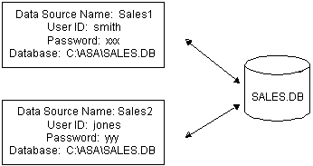

Previous Next
Defining ODBC data sources
Each ODBC data source requires a corresponding ODBC driver
to access it. When you define an ODBC data source, you provide information
about the data source that the driver requires in order to connect
to it. Defining an ODBC data source is often called configuring the
data source.
After you prepare to use the data source, you must define
it using Microsoft's ODBC Data Source Administrator utility.
This utility can be accessed from the Control Panel in Windows or PowerBuilder's
Database painter.
The rest of this section describes what you need to know to
define an ODBC data source in order to access it in the PowerBuilder development
environment.
How PowerBuilder accesses the data source
When you access an ODBC data source in PowerBuilder, there are
several initialization files and registry entries on your computer
that work with the ODBC interface and driver to make the connection.
PBODB105 initialization file
Contents
PBODB105.INI is installed in the Sybase\Shared\PowerBuilder directory. PowerBuilder uses PBODB105.INI to
maintain access to extended functionality in the back-end
DBMS, for which ODBC does not provide an API call. Examples of extended
functionality are SQL syntax or DBMS-specific function
calls.
Editing
In most cases, you do not need to edit PBODB105.INI.
In certain situations, however, you might need to add functions
to PBODB105.INI for your back-end
DBMS.
For instructions, see Appendix A, "Adding
Functions to the PBODB105 Initialization File"
ODBCINST registry entries
Contents
The ODBCINST initialization information is located in the HKEY_LOCAL_MACHINE\SOFTWARE\ODBC\ODBCINST.INI registry
key. When you install an ODBC-compliant driver supplied by Sybase
or another vendor, ODBCINST.INI is automatically
updated with a description of the driver.
This description includes:
- The DBMS or data source associated
with the driver
- The drive and directory of the driver and setup
DLLs (for some data sources, the driver and setup DLLs are the same)
- Other driver-specific connection parameters
Editing
You do not need to edit the registry
key directly to modify connection information. If your driver uses
the information in the ODBCINST.INI registry key,
the key is automatically updated when you install the driver. This
is true whether the driver is supplied by Sybase or another vendor.
ODBC registry entries
Contents
ODBC initialization information is located in the HKEY_CURRENT_USER\SOFTWARE\ODBC\ODBC.INI registry
key. When you define a data source for a particular ODBC driver,
the driver writes the values you specify in the ODBC setup dialog
box to the ODBC.INI registry key.
The ODBC.INI key contains subkeys named
for each defined data source. Each subkey contains the values specified
for that data source in the ODBC setup dialog box. The values might
vary for each data source but generally include the following:
- Database
- Driver
- Optional description
- DBMS-specific connection parameters
Editing
Do not edit the ODBC subkey
directly to modify connection information. Instead, use a tool designed
to define ODBC data sources and the ODBC configuration automatically,
such as the ODBC Data Source Administrator.
Database profiles registry entry
Contents
Database profiles for all data sources are stored in the registry
in HKEY_CURRENT_USER\SOFTWARE\Sybase\PowerBuilder\10.5\
DatabaseProfiles.
Editing
You should not need to edit the profiles
directly to modify connection information. These files are updated
automatically when PowerBuilder creates the database profile as part
of the ODBC data source definition.
You can also edit the profile in the Database Profile Setup
dialog box or complete the Database Preferences property sheet in PowerBuilder to
specify other connection parameters stored in the registry. (For
instructions, see Chapter 8, "Setting Additional Connection Parameters.")
Example
The following example shows a portion of the database profile
for an EAS Demo DB data source:
DBMS=ODBC
DBParm=ConnectString='DSN=EAS Demo DB;UID=dba;PWD=00c61737'
Prompt=0
This registry entry example shows the two most important values
in a database profile for an ODBC data source:
- DBMS The DBMS value (ODBC) indicates that you are using the ODBC interface
to connect to the data source.
- DBParm The ConnectString DBParm parameter controls your ODBC data
source connection. The connect string must specify
the DSN (data source name) value, which tells ODBC which data source
you want to access. When you select a database profile to connect
to a data source, ODBC looks in the ODBC.INI registry key for a
subkey that corresponds to the data source name in your profile.
ODBC then uses the information in the subkey to load the required
libraries to connect to the data source. The connect string can
also contain the UID (user ID) and PWD (password) values needed
to access the data source.
Defining multiple data sources for the same data
When you define an ODBC data source in PowerBuilder, each data
source name must be unique. You can, however, define multiple data
sources that access the same data, as long as the data sources have
unique names.
For example, assume that your data source is an ASA database
located in C:\ASA\SALES.DB.
Depending on your application, you might want to specify different
sets of connection parameters for accessing the database, such as different
passwords and user IDs.
To do this, you can define two ODBC data sources named Sales1
and Sales2 that specify the same database (C:\ASA\SALES.DB)
but use different user IDs and passwords. When you connect to the
data source using a profile created for either of these data sources,
you are using different connection parameters to access the same
data.
Figure 2-4: Using two data sources to access a database

Displaying Help for ODBC drivers
The online Help for ODBC drivers in PowerBuilder is provided
by the driver vendors. It gives help on:
- Completing the ODBC setup dialog box to define the
data source
- Using the ODBC driver to access the data source
Help for any ODBC driver
Use the following procedure to display vendor-supplied Help
when you are in the ODBC setup dialog box for ODBC drivers supplied
with PowerBuilder.
 To display Help for any ODBC driver:
To display Help for any ODBC driver:
Click the Help button in the ODBC setup
dialog box for your driver.
A Help window displays, describing features in the setup dialog
box.
Selecting an ODBC translator
What is an ODBC translator?
The ODBC drivers supplied with PowerBuilder allow you to specify
a translator when you define the data source. An ODBC
translator is a DLL that translates data passing between
an application and a data source. Typically, translators are used
to translate data from one character set to another.
What you do
Follow these steps to select a translator for your ODBC driver.
To select a translator when using an ODBC driver:
In the ODBC setup dialog box for your driver,
display the Select Translator dialog box.
The way you display the Select Translator
dialog box for Sybase-supplied ODBC drivers depends on the driver
and Windows platform you are using. Click Help in your driver's
setup dialog box for instructions on displaying the Select Translator
dialog box.
In the Select Translator dialog box, the translators listed
are determined by the values in your ODBCINST.INI registry
key.
From the Installed Translators list, select a
translator to use.
If you need help using the Select Translator dialog box, click
Help.
Click OK.
The Select Translator dialog box closes and the driver performs
the translation.